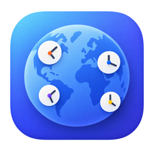

Everywhen
World clocks in your menu bar
The time in the places you care about, always visible. Drag one slider and every clock moves together, so you can see where a meeting actually lands.
What it does
- Any number of timezones in the menu bar, named however you like
- A panel with the full picture — day offsets, GMT offsets, differences from home
- Time travel: move all the clocks at once to find a time that works everywhere
- Alarms in any timezone, delivered as macOS notifications
- Search by city, airport code or GMT offset — entirely offline
Privacy
Everywhen collects nothing and transmits nothing. It contains no networking code at all, no accounts, no analytics and no third-party libraries — city names and daylight-saving rules come from the timezone database already built into macOS. Read the privacy policy.
Requirements
macOS 14 (Sonoma) or later.